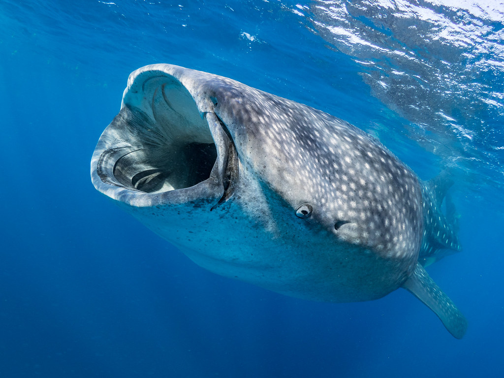

This webpage is currently under development. The whale shark images are from Unsplash and are acting as place holders for the time being.
Ongoing Research
National Oceanic and Atmospheric Administration (NOAA) Office of Ocean Exploration and Research (OER) Intern - summer 2021
This summer I am an intern with NOAA OER. The project title is "Investigating the relationship between water column acoustic backscatter and pelagic fauna" and to do this, I will be utilizing acoustic, remotely operated vehicle (ROV) footage, and satellite data. I will also be participating as a scientist from shore for the Okeanos Explorer expedition EX21-03. This will occur during the week of June 21.
Past Research
Girasek, Q.L., Schields B., Buonaccorsi V.P., Matter J.M. 2021. Phylogenetic Identification of North American Ratsnakes (Pantherophis spp.) in Central Pennsylvania, USA. Herpetological Review. 52: 17-20
We performed a phylogenetic analysis using cytochrome b gene sequences to make species assignments and to determine genetic affinities of snakes in Huntingdon, PA.
Project Highlight
I recently got into 3D printing and 3D design.
For 3D printing, I've been using the PrusaSlicer in the physics department at my college.
For 3D design, I've been using Blender and the Wacom Intuos Creative Pen Tablet.